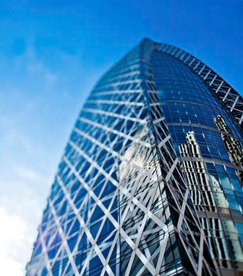
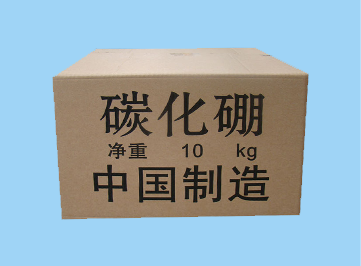

Mudanjiang hongda boron carbide co. LTD
牡丹江市宏达碳化硼有限公司
 牡丹江市宏达碳化硼有限公司成立于1993年。是目前中国生产碳化硼的专业厂家，我厂为满足不同厂家的不同生产要求，在不断的求新，提升每名员工的素质，完善生产工艺。本厂技术力量雄厚，生产设备及生产工艺处于同行业的先进水平，确保产品质量，对于产品的质量、粒度都有现代化的设备仪器跟踪检查、检验，公司已顺利通过ISO9001：2000质量管理体系认证，依托雄厚的技术力量及先进的生产工艺，现已形成碳化硼产品500多吨的生产能力，为适应市场需求，提高产品参于竞争的能力，企业投入巨资，引进了世界上先进的生产技术，全面改造更新了生产工艺。改造后，工厂的产品质量跃居为同行业领先水平。并可根据国内外客户的要求生产加工特殊规格粒度的碳化硼。
本厂以"质量第一，客户至上"的经营宗旨，热诚欢迎国内外客户光顾，淡谈业务。
碳化硼是最硬的人造磨料之一，硬度仅次于金刚石，其硬度为9.36，研磨效率高，适用于各种硬质合金，宝石等材料的研磨、抛光、钻孔等加工，是金刚石的理想代用材料。
碳化硼也是工程制品，耐火材料，特殊焊接的主要原料，可制成耐磨焊条、各种高级快速切削刀具和耐磨程度极高的磨具、喷砂嘴、密封环和精密量元件等。
碳化硼比重2.52g/cm3.熔点2450度，耐高温与碱不起反应，具有吸收中子和半导体导电性质，是制造硼化钛等金属硼化物，硼钢和核工业中子吸收剂等不可缺少的材料。
- 
10kg箱装
-
10kg箱装
-
10kg箱装
碳化硼在各行业的的应用
耐火材料、国防工业、工程陶瓷材料、普通工业、电性能应用、作为化学原料的应用、蓝宝石晶片（LED）、军火工业、化工、航空、航天、核工业领域等很多工业中应用。
碳化硼（boron carbide ），别名黑钻石，分子式为B₄C，通常为灰黑色微粉。是已知最坚硬的三种材料之一（其他两种为金刚石、立方相氮化硼），用于坦克车的装甲、避弹衣和很多工业应用品中。它的摩氏硬度为9.3。
-
102019-10
碳化硼在耐火材料中的应用
碳化硼主要用于含碳耐火材料中起抗氧化作用可以使产品致密化阻止含碳耐火材料中碳的氧化同时在℃～℃的时候，与发生反应，生成的柱状晶体， 分布在耐火材料的基质和间隙里，从而降低气孔率，提高中温强度，且生成的晶体，体积膨胀，可愈合体积收缩，减少裂纹。 -
102019-10
碳化硼在耐火材料中的应用
碳化硼主要用于含碳耐火材料中起抗氧化作用可以使产品致密化阻止含碳耐火材料中碳的氧化同时在℃～℃的时候，与发生反应，生成的柱状晶体， 分布在耐火材料的基质和间隙里，从而降低气孔率，提高中温强度，且生成的晶体，体积膨胀，可愈合体积收缩，减少裂纹。 -
102019-10
碳化硼在耐火材料中的应用
碳化硼主要用于含碳耐火材料中起抗氧化作用可以使产品致密化阻止含碳耐火材料中碳的氧化同时在℃～℃的时候，与发生反应，生成的柱状晶体， 分布在耐火材料的基质和间隙里，从而降低气孔率，提高中温强度，且生成的晶体，体积膨胀，可愈合体积收缩，减少裂纹。 -
102019-10
碳化硼在耐火材料中的应用
碳化硼主要用于含碳耐火材料中起抗氧化作用可以使产品致密化阻止含碳耐火材料中碳的氧化同时在℃～℃的时候，与发生反应，生成的柱状晶体， 分布在耐火材料的基质和间隙里，从而降低气孔率，提高中温强度，且生成的晶体，体积膨胀，可愈合体积收缩，减少裂纹。 -
102019-10
碳化硼在耐火材料中的应用
碳化硼主要用于含碳耐火材料中起抗氧化作用可以使产品致密化阻止含碳耐火材料中碳的氧化同时在℃～℃的时候，与发生反应，生成的柱状晶体， 分布在耐火材料的基质和间隙里，从而降低气孔率，提高中温强度，且生成的晶体，体积膨胀，可愈合体积收缩，减少裂纹。 -
102019-10
碳化硼在耐火材料中的应用
碳化硼主要用于含碳耐火材料中起抗氧化作用可以使产品致密化阻止含碳耐火材料中碳的氧化同时在℃～℃的时候，与发生反应，生成的柱状晶体， 分布在耐火材料的基质和间隙里，从而降低气孔率，提高中温强度，且生成的晶体，体积膨胀，可愈合体积收缩，减少裂纹。
扫描关注手机网站
- 13091859655
- 传真：0453-6889078
- QQ号：28619270
- 联系人：侯经理
- 网址：www.hdthp.com
- 邮箱：663814@qq.com
- 邮箱：mdjhdthp@163.com
 地 址：黑龙江省牡丹江市爱民区北安路191号
地 址：黑龙江省牡丹江市爱民区北安路191号